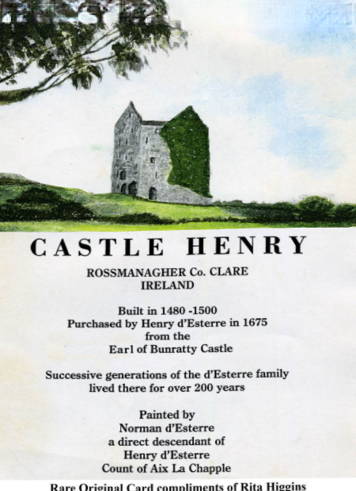
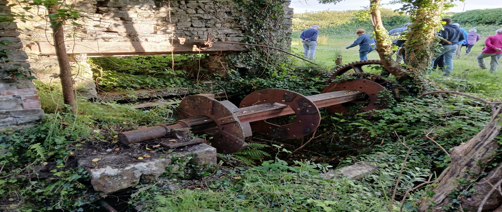
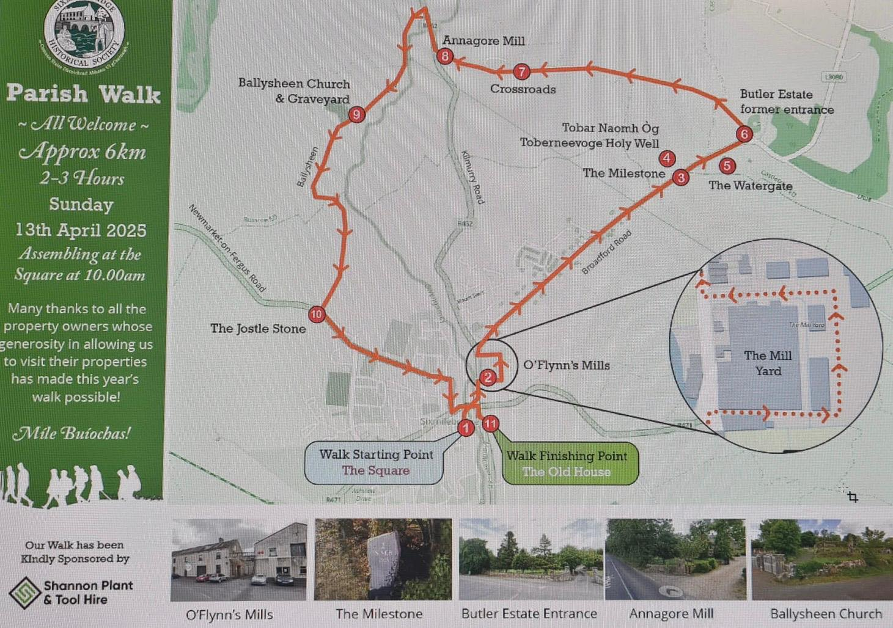
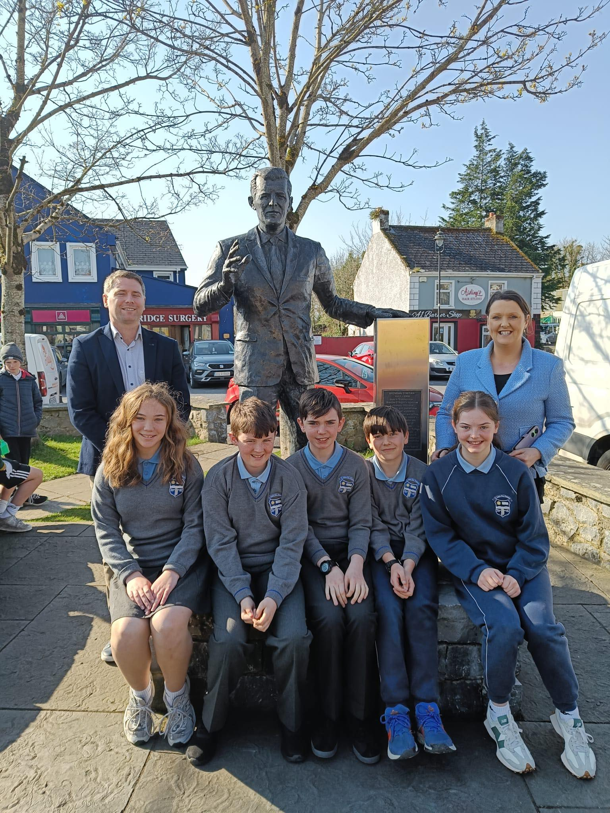
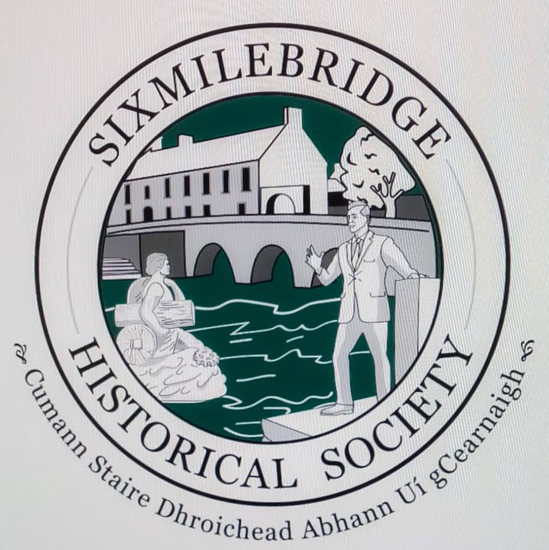
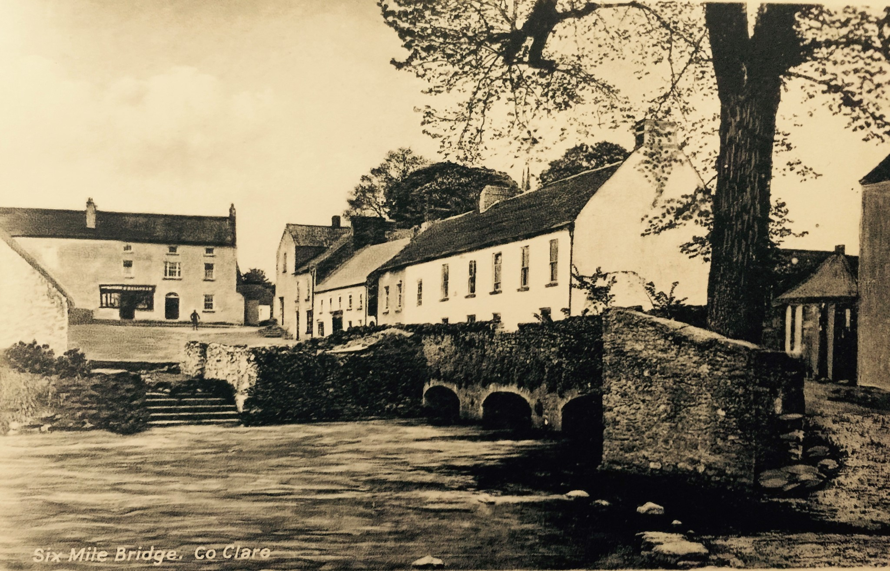
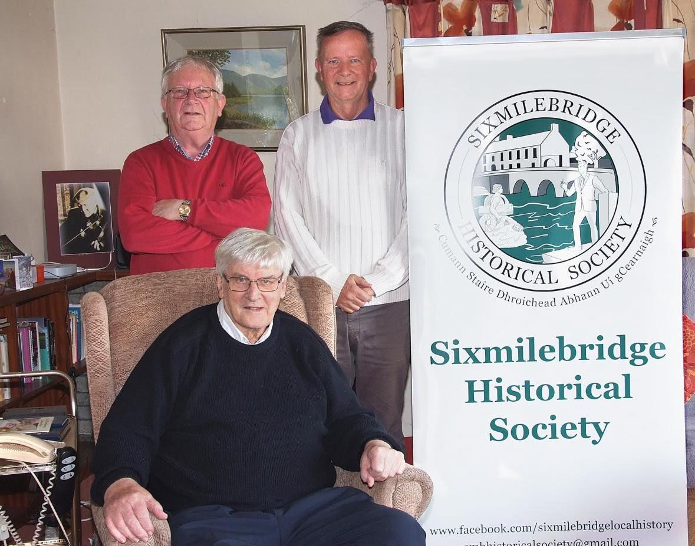
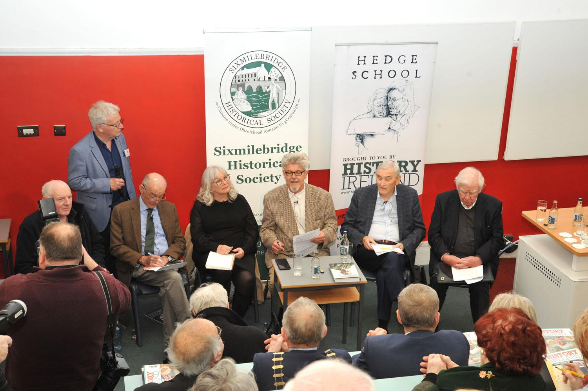
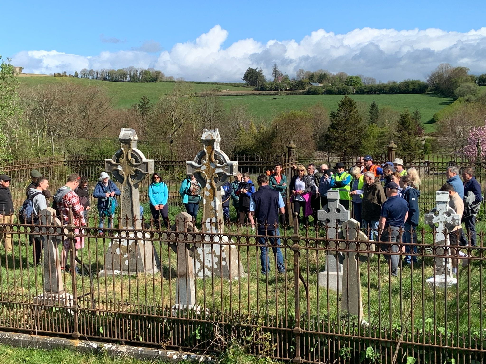
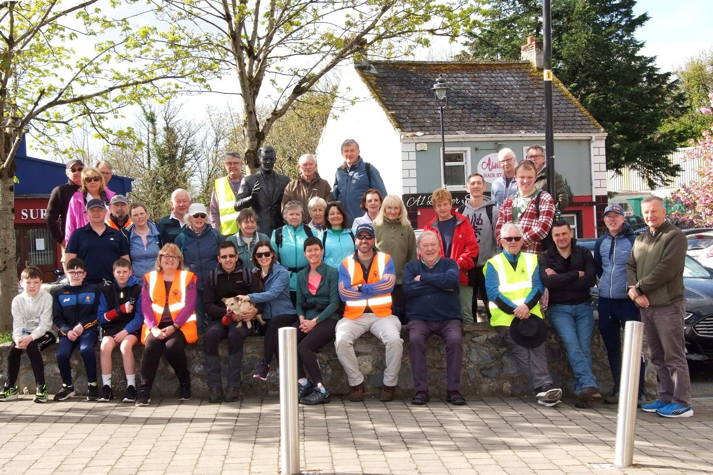

A collection of historical photographs and images related to Sixmilebridge and its heritage. (More images and categories will be added soon.)

Sixmilebridge Castle - Medieval Heritage Site

Historical Mill Machinery - Industrial Heritage

Traditional Parish Walk - Community Heritage Trail

The Old School - Educational Heritage Building

Historical Society Emblem - Founded 2020Official Society Logo - Sixmilebridge Historical Society

Historic Bridge - Architectural Heritage

Parish Priest - Religious HeritageSociety Volunteers - Community Heritage Work

Society Event - Community Heritage Activities

Heritage Discovery - Recent Historical Find

Heritage Field Trip - Exploring Local History